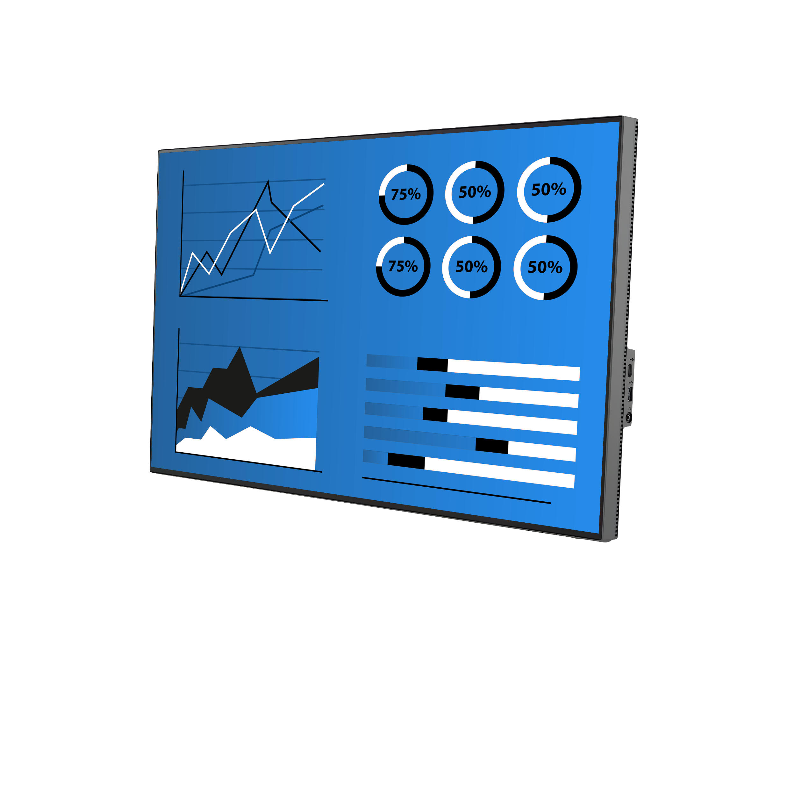
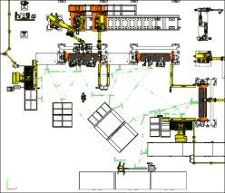
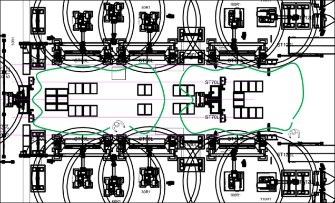
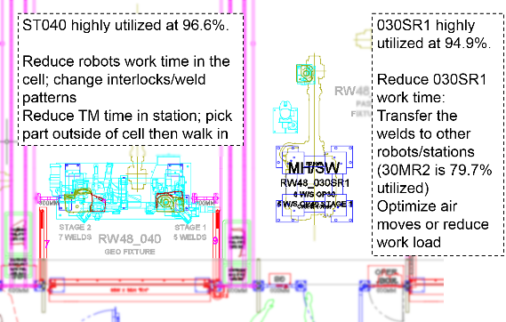
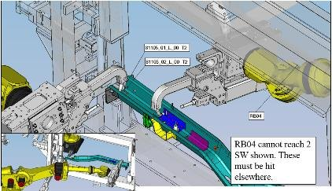

Continuous Improvement Processing
Maximizing Production Efficiency & Cost Savings Through Structured Process Optimization

Are Inefficiencies in Your Assembly Line Slowing Down Production?
The challenge
Typical issues we see
- Limited throughput & process bottlenecks impacting production goals
- Underutilized resources & excessive floor space consumption increasing operational costs
- Inefficiencies in integrating new products into existing production lines
- Lack of structured lean manufacturing processes leading to inefficiencies
- High capital costs for expansion or process modifications without clear ROI
- Inconsistent process improvements due to lack of a data-driven Value Analysis/Value Engineering (VAVE) strategy
Key Inputs Required for Process Optimization
Existing Assembly Line Data
Cycle times, production rates, workforce utilization, and known inefficiencies
Awarded Program & Production Volume Requirements
Future capacity planning and lean process development
Manufacturing Constraints & Capital Investment Plans
Space, workforce, automation potential, and financial limitations
Material Flow & Logistics Data
Identifying inefficiencies in part movement, staging, and workstation ergonomics
Deliverables: Data-Driven Solutions That Transform Production Efficiency
VAVE Workshop & Optimization Proposal Roadmap
Facilitated sessions that identify cost-saving and efficiency opportunities across your assembly lines, followed by detailed proposals outlining lead times, cost-saving estimates, and actionable implementation plans.
Digital Tracking & Power BI–Integrated VAVE Collector
Enable real-time visibility into improvement initiatives, implementation progress, and savings through a centralized, digital dashboard.
Assembly Line Throughput & Bottleneck Analysis
Analyze flow constraints and inefficiencies using real data to improve line balance, reduce cycle times, and increase output.
Resource Allocation & Floor Space Optimization Plan
Maximize the use of labor, capital equipment, and layout space to improve operational efficiency and reduce overhead costs.
Lean Process Development & Best Practices Implementation
Introduce scalable lean production methods and waste-reduction techniques to ensure readiness before integrator kickoff.
Ongoing Support & Monthly Follow-Up Strategy
Structured follow-up sessions with plant teams to monitor progress, address roadblocks, and ensure execution stays on track.
Before and after
Eliminate waste


In practice
Simulation and analysis outputs


Extend the life and performance of your existing production lines with targeted VAVE and lean solutions.
info@imsystems.com.sa